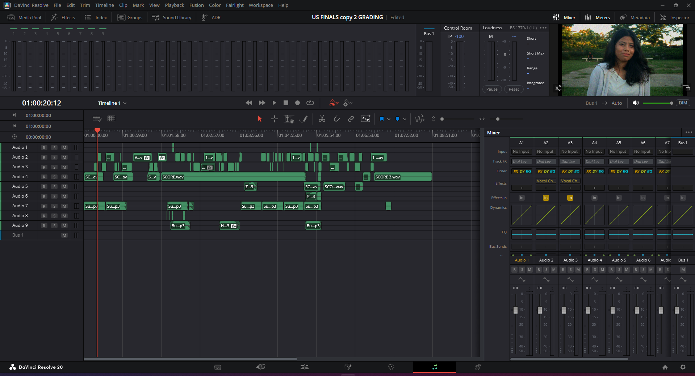
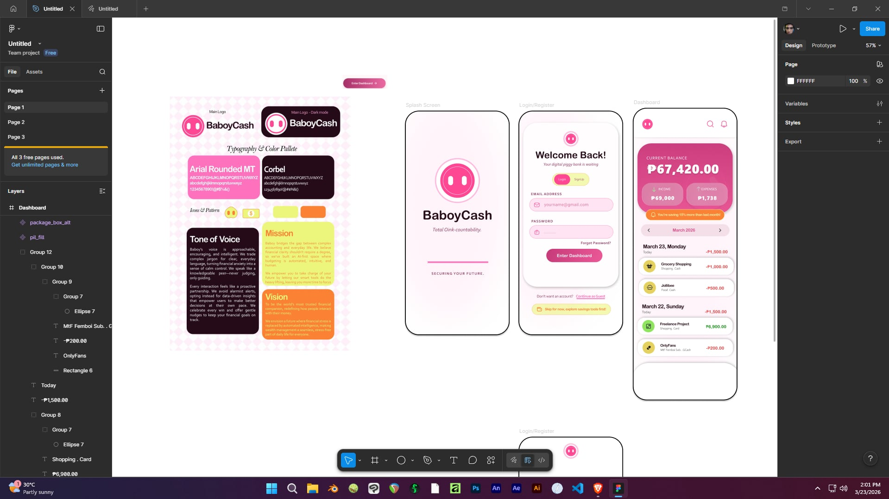
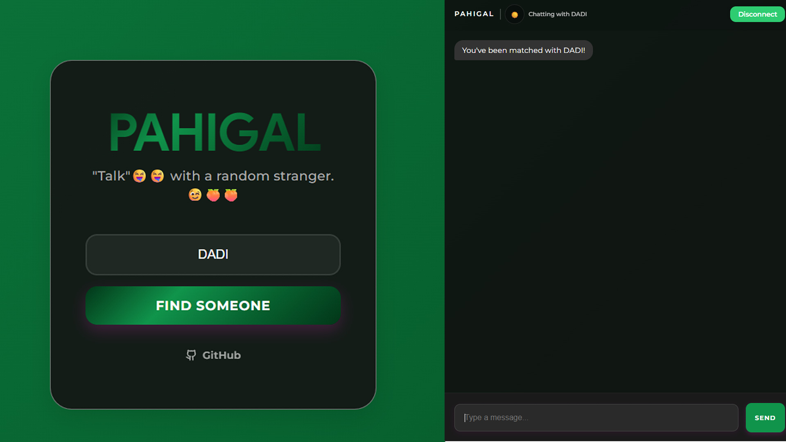
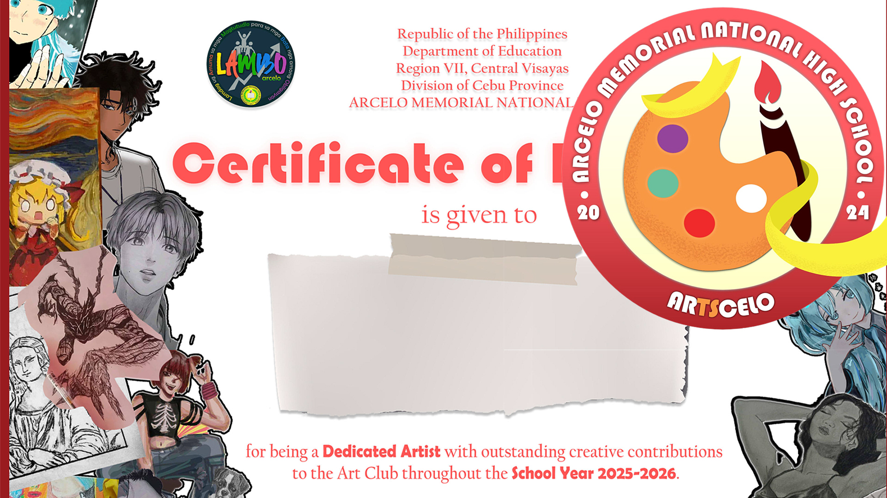
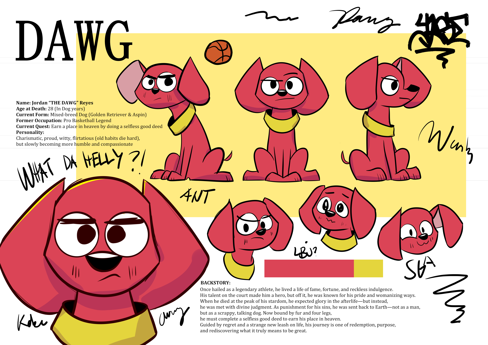
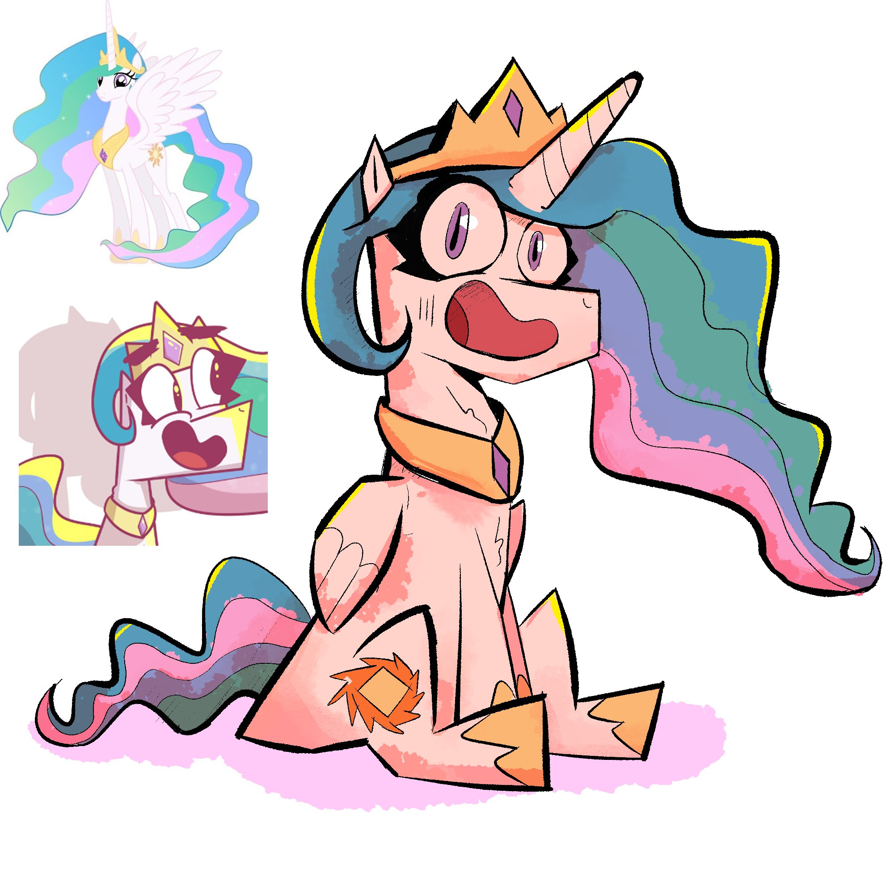
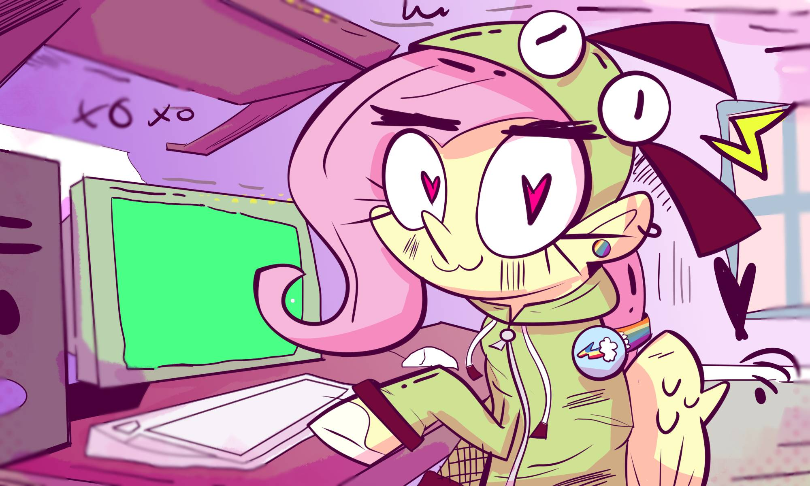

Selected Works
A showcase of my multi-disciplinary projects.
Film & Post-Production
Short Film: PAGANDUY
A visceral, narrative-driven experience translating the internal struggle of a college student. Structured as a flashback, the film relies on introspective narration, claustrophobic framing, and custom foley to explore the heavy cost of ambition.
Short Film: The Best Jollibee of All Time
A post-modernist comedy following a doomed quest for the perfect meal. Utilizes elliptical editing to imply the exhausting passage of time, transitioning into a grounded visual resolution that highlights the bond between characters.
Short Film: UNO
An exercise in 1920s silent cinema stylization. This experimental project uses vintage visual treatments and expressive physical acting to turn a frustrating game of UNO into a slapstick comedy driven entirely by visual cues.
"WAYANFOAM Advertising Project"
A somber narrative exploring the silent struggle of a depressed boy and the emotional weight carried by his older sister. This project uses atmospheric pacing to highlight the quiet realities of a family in crisis.
"BIZNIZ TALK: TALKSHOW"
Converted a standard discussion into a variety-show experience. Implemented specialized audio restoration and reactive typography inspired by East Asian variety shows to keep complex subject matter engaging.
Audio & Music Production
Original Musical Score: PAGANDUY
An original score composed to mirror the protagonist's mental fatigue and internal conflict. By blending atmospheric textures with melodic cues, the production creates a heavy, immersive sonic landscape that anchors the film’s emotional depth.

PAGANDUY Soundscape & Foley
An immersive auditory experience developed using DaVinci Resolve. Using recorded foley and layered SFX designed to deepen the film's atmosphere, utilizing precision audio mixing to bring the protagonist's environment to life.
Graphic Design & Branding

BaboyCash: Brand Identity
Complete brand kit for a budget and accounting app. Designed a friendly, approachable visual identity including logo marks, typography, and a color palette that emphasizes financial security and ease of use.

PAHIGAL: Interface Design
User interface design for a real-time matchmaking chat room. Focused on creating a clean, high-retention layout that facilitates seamless communication and a modern social experience.

Marketing, Print & Social Media: ARTSCELLO
Crafted the visual identity and promotional campaign for ARTSCELLO, a student organization. This project focused on creating vibrant, relatable social media content and print posters to drive student recruitment and foster a creative community on campus.
2D Illustration & Concept Art

Character Turnaround Sheet
Full 360-degree character design turnaround showing proportions, expressions for animation.

Key Art / Splash Illustration
Fully rendered digital illustration focusing on lighting, composition, and visual storytelling.

Background Illustration
A stylized digital illustration designed to establish a vibrant mood and intimate setting. This piece integrates dynamic character design with a detailed desk environment to tell a visual story about creativity and personality.